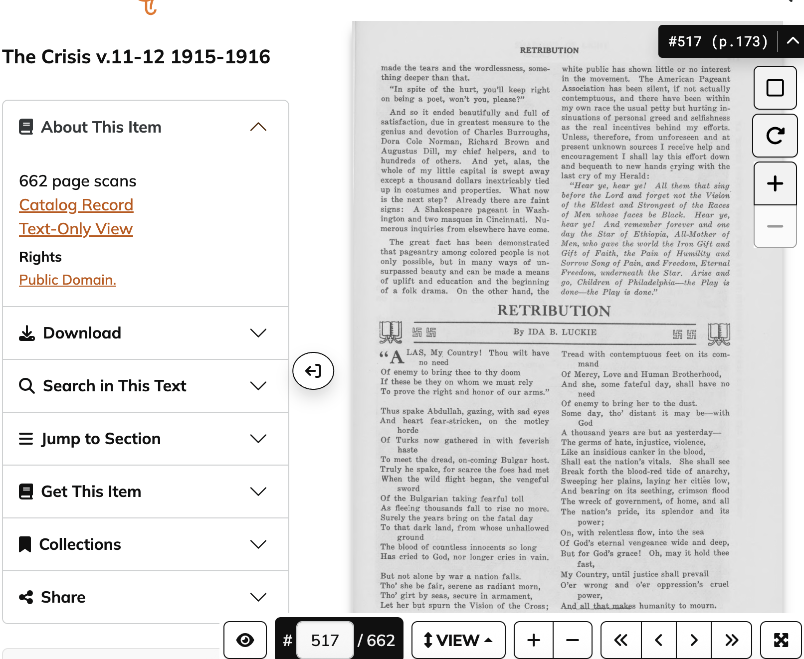

This page is from The Crisis, Volume 11–12 (1915–1916). The poem “Retribution” appears on page 517 of the scanned volume.

“Retribution” is a poem written by Ida B. Luckie and published in The Crisis. The poem reflects themes of justice and moral reckoning. By looking at the original work we can see the context of the poem and where it falls within the structure of the literary work. In this case we can see that the poem falls in a work that talks about African American accomplishments/news and this appears to be one of them.
Title: Retribution
Author: Ida B. Luckie
Publication: The Crisis
Volume: v.11–12 (1915–1916)
Page: 517 (173)
Archive: HathiTrust Digital Library
Rights: Public Domain